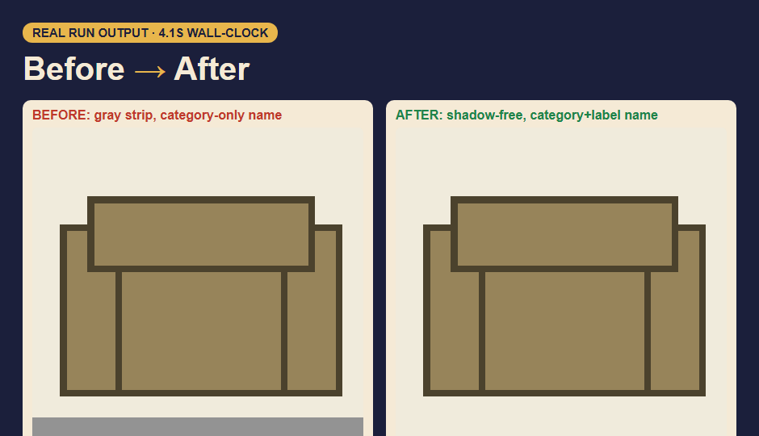

    <div class="halo"></div>
    <div class="dots"></div>
    <div class="frame">
      <div class="bar"><i></i><i></i><i></i><span class="name">import-fixer.app</span></div>
      <div class="vp"></div>
    </div>
    <div class="stats">
      <div class="stat s1" data-n="16"><b>16</b>px tiles</div>
      <div class="stat s2" data-n="32"><b>32</b>px tiles</div>
      <div class="stat s3" data-n="48"><b>48</b>px tiles</div>
    </div>
